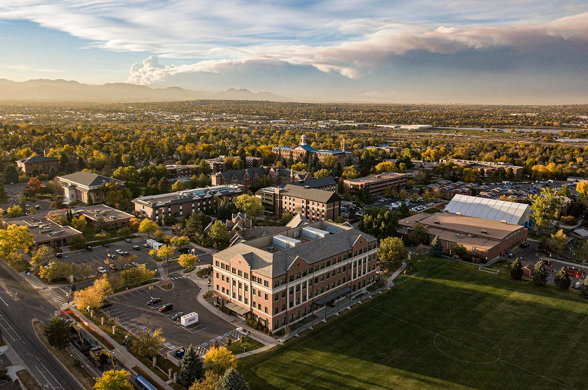
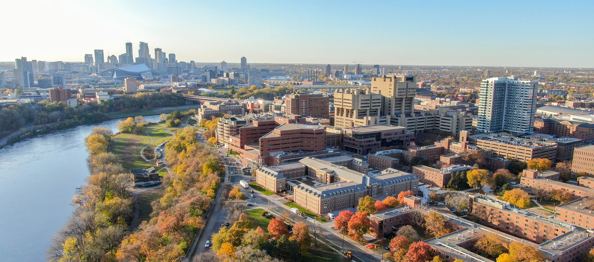

<!DOCTYPE html>
<html>
<head>
<!-- reference to Leaflet CSS -->
<link rel="stylesheet" href="https://unpkg.com/leaflet@1.9.3/dist/leaflet.css" integrity="sha256-kLaT2GOSpHechhsozzB+flnD+zUyjE2LlfWPgU04xyI=" crossorigin="">

<!-- reference to Leaflet JavaScript -->
<script src="https://unpkg.com/leaflet@1.9.3/dist/leaflet.js" integrity="sha256-WBkoXOwTeyKclOHuWtc+i2uENFpDZ9YPdf5Hf+D7ewM=" crossorigin=""></script>

</head>

<body>

  <div id="map" style = "width: 1000px; height: 580px"></div> 
  <script>


    const education = L.layerGroup();

    const work = L.layerGroup();


const kansascity = L.marker([39.100996863354055, -94.57957546320323]).bindPopup('2023 - Present: Currently working as a GIS Data Analyst for Xentity').addTo(work);

    const denver = L.marker([39.78959911075947, -105.03152251289724]).bindPopup('<h1> 2012 - 2016: </h1> <p>Received Bachelors of Arts in Environmental Studies from Regis University </p> ' ).addTo(education);

    const broomfield = L.marker([39.912807108365655, -105.07267397165714]).bindPopup('2019 - 2020: GIS Tech for Tasman Geosciences').addTo(work);

    const mpls = L.marker([44.97190134891426, -93.24332992523516]).bindPopup('<h1>2016 - 2018: </h1> <p>Received Masters of Arts in Geography from University of Minnesota</p> ').addTo(education);

    const slc = L.marker([40.766759067938466, -111.88710836495122]).bindPopup('2020 - 2022: GIS Analyst for Red Castle Resources in SLC').addTo(work);

    const mbAttr = 'Map data &copy; <a href="https://www.openstreetmap.org/copyright">OpenStreetMap</a> contributors, Imagery © <a href="https://www.mapbox.com/">Mapbox</a>';
    const mbUrl = 'https://api.mapbox.com/styles/v1/{id}/tiles/{z}/{x}/{y}?access_token=pk.eyJ1IjoibWFwYm94IiwiYSI6ImNpejY4NXVycTA2emYycXBndHRqcmZ3N3gifQ.rJcFIG214AriISLbB6B5aw';
 
    var osm = L.tileLayer('https://api.maptiler.com/maps/outdoor/{z}/{x}/{y}.png?key=HmFw65ohtlrYxPUniiUD', {
            maxZoom: 19,
            attribution: '© maptiler © OpenStreetMap' 
           }); 

    const CartoDB_DarkMatter = L.tileLayer('https://{s}.basemaps.cartocdn.com/dark_all/{z}/{x}/{y}{r}.png', {attribution: '&copy; <a href="https://www.openstreetmap.org/copyright">OpenStreetMap</a> contributors &copy; <a href="https://carto.com/attributions">CARTO</a>',
        subdomains: 'abcd',
        maxZoom: 19
        });

    const map = L.map('map', {
        center: [39.73, -104.99],
        zoom: 4,
        layers: [osm, education]
    });

    const baseLayers = {
        'OpenStreetMap': osm,
        'Dark': CartoDB_DarkMatter
    };

    const overlays = {
        'Education': education,
        'Work': work
    };

    const layerControl = L.control.layers(baseLayers, overlays).addTo(map);

</script>
</body>
</html>

